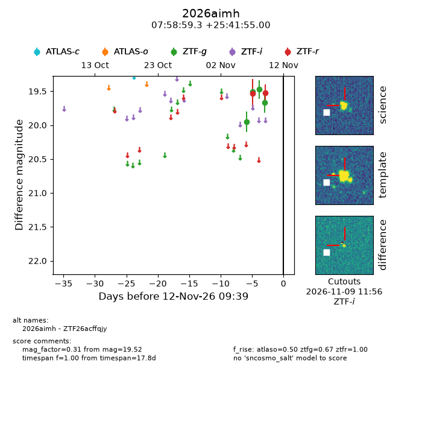
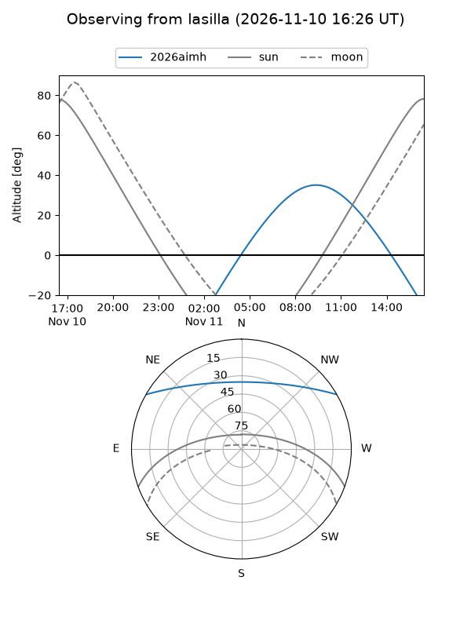
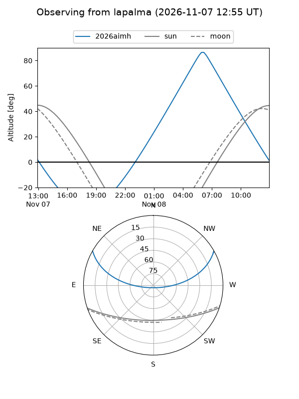
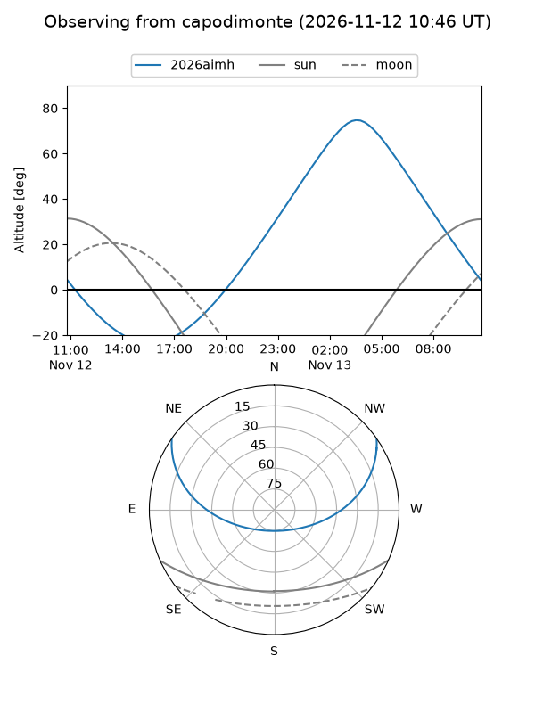
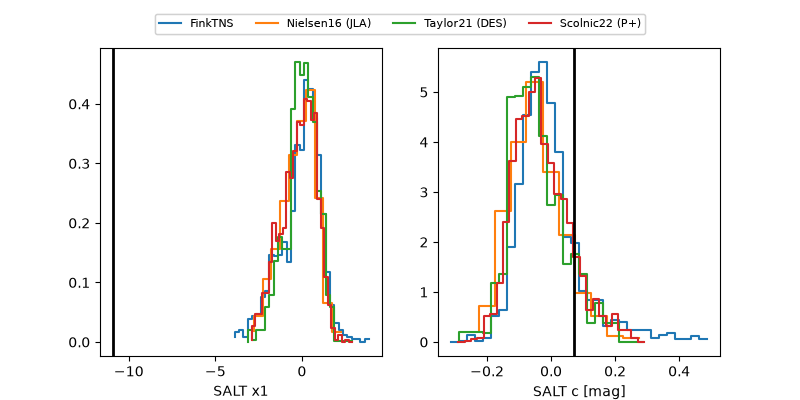

2026aimh
Target 2026aimh at 2026-11-12 09:45
Aliases and brokers:
FINK-ZTF: ztf.fink-portal.org/ZTF26acffqjy
Lasair-ZTF: lasair-ztf.lsst.ac.uk/objects/ZTF26acffqjy
ALeRCE-ZTF: alerce.online/object/ZTF26acffqjy
YSE-PZ: ziggy.ucolick.org/yse/transient_detail/2026aimh
TNS name: wis-tns.org/object/2026aimh
Direct TNS query: direct search
alt names
ZTF26acffqjy (ztf,fink_ztf)
2026aimh (tns,yse)
Coordinates:
equatorial (ra, dec) = 119.7469,+25.69861
equatorial (HMS+DMS) = 07:58:59.26,+25:41:55.00
galactic (l, b) = (195.7520,+25.51163)
Flags:
peak dt:
Photometry:
last atlaso=nan, ztfg=19.66, ztfr=19.52
1 atlaso, 4 ztfg, 2 ztfr detections
Lightcurve

Visibility



Additional plots
